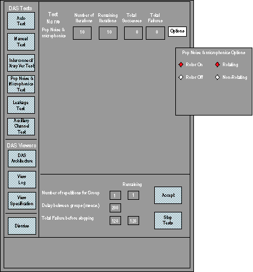

Operating Documentation
Direction 5114043-800, Rev# 9
LightSpeed 3.X Service Methods (Advanced)
Operating Documentation |
A series of predefined rotating scans, w/o x-ray, and the scan data saved on disk for analysis. The scan data is then viewed averaged and the standard deviations are measured against a spec limit.
Illustration 1: Pop Noise and Microphonics Test

This test takes a series of three scans. In the auto-mode, it takes ten iterations of the series. In the manual mode, the user has the ability to select the number of iterations as well as gantry speed and rotor selection. This helps in isolating microphonic problems caused by mechanical rotation issues, or rotor noise.
Failure analysis of this test is dependent on test results. Pop/Noise and microphonics issues can be caused by many system related conditions. Some of the most common could be the DAS/Detector interface (such as elastomer connection caused by dirt, oil, debris), flex top cover clamp torque incorrect, air plenum not installed or fan orientation not correct, power supply noise, electrical connections, gantry rotation/mechanical issues, and external influences. It is very important to look at patterns relative to DAS/Detector architecture, gantry rotation (azimuth position as well as velocity), and high voltage (with or without x-ray, Rotor on/off).